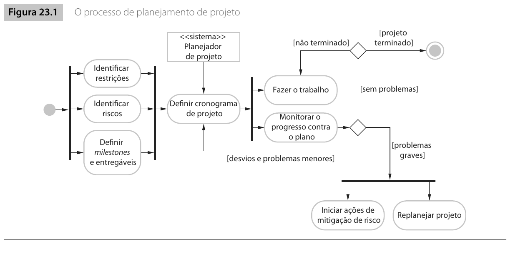
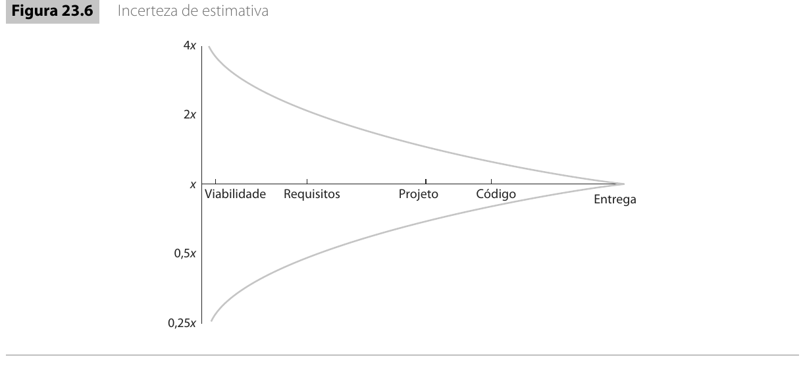
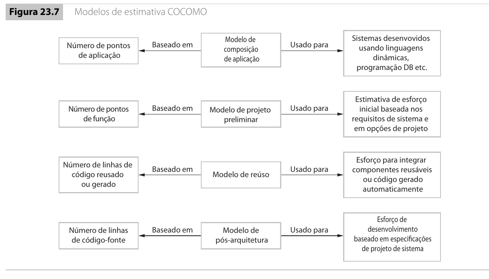
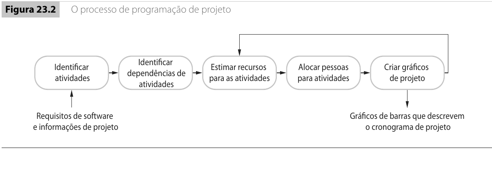
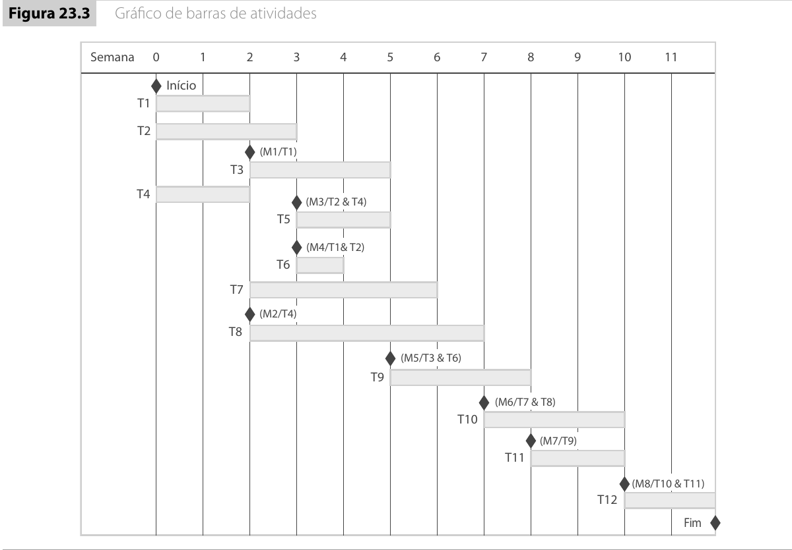
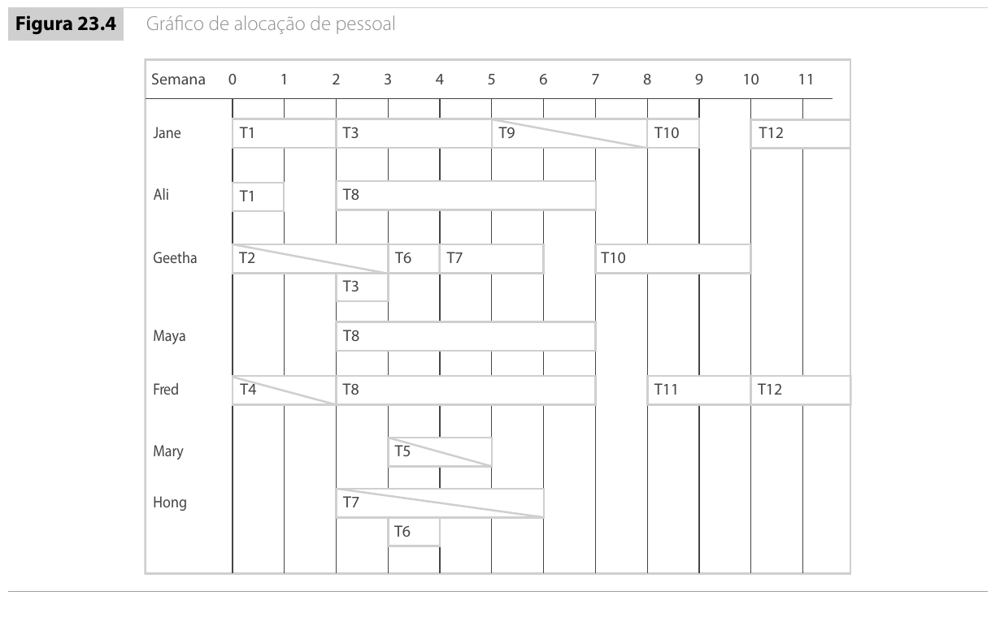

Introdução12.1
Hoje você vai ver como transformar uma intenção de projeto em um plano que pode ser discutido, acompanhado e corrigido. Nas últimas aulas, você estudou planejamento em visão geral e gerência de riscos. Agora o foco muda para duas perguntas práticas: quanto trabalho existe? e quando esse trabalho pode ser entregue?
Essas duas perguntas parecem simples, mas são fontes constantes de erro em projetos reais. Uma equipe pode subestimar o tamanho do sistema. Pode confundir esforço com duração. Pode esquecer dependências entre tarefas. Pode prometer prazo sem considerar pessoas disponíveis. Pode aceitar uma data fixa sem reduzir escopo. Pode usar uma estimativa inicial, feita com pouca informação, como se fosse uma promessa definitiva.
Planejar bem não significa prever tudo. Significa deixar claras as hipóteses usadas, estimar com responsabilidade, reconhecer incertezas, organizar tarefas em uma sequência possível e acompanhar o progresso com evidências.
Uma estimativa é uma previsão feita com as informações disponíveis em um momento específico. Quando requisitos, arquitetura, tecnologia, equipe ou riscos mudam, a estimativa também precisa ser revisada.
Esta aula está organizada em dois blocos. O primeiro trata de conceitos e estimativas: custo, preço, esforço, incerteza, estimativas baseadas em experiência e modelos algorítmicos. O segundo trata de cronograma e prazos: tarefas, duração, dependências, marcos, entregáveis, alocação de pessoas, contingência e compressão de prazo.
O planejamento começa com incerteza12.2
Quando um projeto começa, a equipe raramente conhece todos os detalhes do produto. Ela pode ter uma visão geral do sistema, algumas restrições contratuais, uma ideia de tecnologias possíveis e uma expectativa inicial de prazo. Mas ainda faltam informações importantes.
Os requisitos podem estar incompletos. O cliente pode ainda não conhecer todas as regras de negócio. Uma integração pode parecer simples e depois revelar dependências externas. Uma funcionalidade aparentemente pequena pode exigir mudança em banco de dados, permissões, relatórios e testes. Uma tecnologia escolhida pode funcionar bem em protótipo e falhar em volume real.
Por isso, o planejamento deve ser visto como uma hipótese organizada. Ele descreve como a equipe pretende executar o trabalho, mas essa descrição precisa ser revisada conforme o projeto aprende.

A Figura 23.1 mostra o processo de planejamento como um ciclo. Primeiro a equipe identifica restrições, riscos, marcos e entregáveis. Depois organiza o cronograma. Durante o trabalho, monitora o progresso. Se surgirem problemas graves, o projeto precisa de mitigação e replanejamento.
Um plano que nunca muda pode parecer disciplinado, mas pode estar apenas escondendo a realidade. O problema não é revisar o plano. O problema é continuar trabalhando como se o plano antigo ainda representasse o projeto.
Uma equipe planeja entregar um sistema de agendamento médico em quatro meses. No plano inicial, a integração com pagamentos aparece apenas no terceiro mês. Na segunda semana, a equipe descobre que o gateway de pagamento exige cadastro, validação jurídica, ambiente de homologação e certificação.
Se a equipe mantiver o plano original, ela provavelmente descobrirá tarde demais que a integração bloqueia a entrega. Um plano maduro antecipa essa validação. A equipe pode criar uma prova de conceito na primeira quinzena, descobrir os prazos externos e ajustar o cronograma antes de comprometer a data de entrega.
Custo, preço, esforço e prazo12.3
Antes de estimar, precisamos separar alguns conceitos que costumam ser misturados.
| Conceito | Significado | Exemplo |
|---|---|---|
| Esforço | Quantidade de trabalho humano necessário | 40 pessoas-dia, 12 pessoas-mês |
| Duração | Tempo no calendário | 3 semanas, 4 meses |
| Custo | Gasto da organização para executar o projeto | salários, licenças, servidores, viagens |
| Preço | Valor negociado com o cliente | contrato de R$ 300.000,00 |
| Escopo | Conjunto de funcionalidades, entregas e restrições | cadastro, relatórios, integração, implantação |
Esses conceitos se relacionam, mas não são iguais. Uma tarefa pode exigir 10 pessoas-dia de esforço e durar 5 dias se duas pessoas trabalharem nela em paralelo. Outra tarefa pode exigir 10 pessoas-dia e durar 20 dias se uma pessoa trabalhar em meio período. O esforço mede trabalho humano. A duração mede tempo de calendário.
Também é importante separar custo e preço. O custo é o que a organização gasta para executar o projeto. O preço é o que ela cobra ou negocia. O preço pode ser influenciado por estratégia comercial, concorrência, risco assumido, relacionamento com o cliente e oportunidade de mercado.
Uma empresa estima que um projeto exigirá 30 pessoas-mês de esforço. O custo médio mensal de uma pessoa, considerando salário, encargos e estrutura da empresa, é de R$ 16.000,00.
O custo direto de esforço será:
$$ 30 \times 16.000 = 480.000 $$
Se ainda houver R$ 40.000,00 em licenças, R$ 25.000,00 em infraestrutura e R$ 15.000,00 em treinamentos, o custo estimado será:
$$ 480.000 + 40.000 + 25.000 + 15.000 = 560.000 $$
Esse valor não é necessariamente o preço. A empresa pode cobrar mais para incluir margem e risco. Pode cobrar menos por estratégia comercial. Mas, se aceitar um preço muito abaixo do custo sem reduzir escopo, ela estará assumindo um risco financeiro.
O custo ajuda a entender a viabilidade econômica do projeto. O preço depende de negociação, estratégia e risco. Um projeto pode ser tecnicamente bem estimado e ainda assim ter preço ruim.
Estimativas em estágios diferentes12.4
Uma estimativa feita no início do projeto não tem a mesma confiabilidade de uma estimativa feita depois que requisitos, arquitetura, riscos e equipe estão mais claros. No começo, a equipe conhece pouco. Depois, aprende mais.

A Figura 23.6 deixa a mensagem clara: a incerteza diminui conforme o projeto avança. No estágio de viabilidade, a estimativa pode variar muito. Depois que requisitos principais foram discutidos, a incerteza diminui. Depois que a arquitetura inicial é definida, diminui mais. Quando o sistema já foi implementado e entregue, o esforço real é conhecido.
| Estágio | Informação disponível | Confiabilidade da estimativa |
|---|---|---|
| Viabilidade | Objetivo geral, restrições iniciais, pouco detalhe | Baixa |
| Requisitos | Funções principais, usuários, regras iniciais | Melhor, mas ainda incerta |
| Arquitetura | Principais componentes, integrações, decisões técnicas | Mais estável |
| Implementação | Parte do sistema já construída, velocidade observada | Alta |
| Entrega | Esforço real conhecido | Não é mais estimativa |
Fazer estimativas iniciais é necessário. Sem elas não há proposta, orçamento nem cronograma. O perigo está em tratá-las como verdade definitiva.
Se sua estimativa inicial dobrar depois de duas semanas de análise, isso significa que a primeira estimativa estava errada ou que o projeto era maior do que parecia?
Na fase de proposta, uma equipe estima que um sistema de biblioteca exigirá 20 pessoas-mês. Essa estimativa foi feita com base em uma descrição curta: cadastro de livros, empréstimos, devoluções, multas e relatórios.
Duas semanas depois, durante análise de requisitos, a equipe descobre novas condições. O sistema precisa importar 15 anos de acervo antigo, integrar com login institucional, enviar notificações por e-mail, controlar reserva por prioridade e gerar relatórios para auditoria pública.
A estimativa inicial não estava necessariamente errada. Ela foi feita com pouca informação. O erro seria manter os 20 pessoas-mês como compromisso rígido depois que o escopo real ficou maior.
Estimativa baseada em experiência12.5
A forma mais comum de estimar em projetos reais é usar experiência. A equipe olha para projetos anteriores, para tarefas semelhantes, para sua própria capacidade e para o domínio do problema. Depois decompõe o trabalho em partes menores e estima cada parte.
Essa abordagem melhora quando mais de uma pessoa participa. Um desenvolvedor pode perceber dificuldade técnica. Uma pessoa de testes pode lembrar massa de dados e cenários de borda. Uma pessoa de operações pode lembrar implantação, certificados e permissões. Alguém do cliente pode lembrar regras raras que não aparecem na descrição inicial.
Um processo simples de estimativa baseada em experiência pode seguir este fluxo:
| Passo | Pergunta |
|---|---|
| Identificar entregáveis | O que precisa existir ao final? |
| Decompor o trabalho | Quais partes menores compõem cada entrega? |
| Estimar cada parte | Quanto esforço cada parte exige? |
| Discutir divergências | Por que uma pessoa estimou 2 dias e outra 8 dias? |
| Registrar premissas | O que estamos assumindo como verdadeiro? |
| Adicionar contingência | Que margem reconhece riscos e incerteza? |
| Revisar durante o projeto | O que aprendemos que muda a estimativa? |
Uma equipe estima um módulo de relatórios administrativos.
| Parte | Estimativa inicial |
|---|---|
| Relatório de consultas por período | 3 pessoas-dia |
| Relatório por médico | 3 pessoas-dia |
| Relatório de taxa de falta | 4 pessoas-dia |
| Exportação CSV | 2 pessoas-dia |
| Controle de permissão | 3 pessoas-dia |
| Testes com massa realista | 4 pessoas-dia |
O total direto é 19 pessoas-dia. Durante a discussão, a equipe percebe que os dados históricos estão inconsistentes. Alguns registros antigos não têm especialidade médica, outros não têm status de comparecimento e alguns pacientes foram cadastrados duas vezes.
A equipe adiciona 6 pessoas-dia para saneamento e adaptação de dados. A estimativa passa para 25 pessoas-dia antes da contingência. A conversa em grupo revelou trabalho escondido.
Modelagem algorítmica12.6
Modelos algorítmicos tentam estimar esforço por meio de fórmulas. A ideia geral é relacionar esforço com tamanho do sistema, complexidade, características do produto, maturidade do processo, capacidade da equipe e qualidade das ferramentas.
Uma forma geral de pensar esses modelos é:
$$ \text{Esforço} = A \times \text{Tamanho}^{B} \times M $$
Cada termo tem uma função.
| Termo | Significado |
|---|---|
| $A$ | Fator associado ao contexto da organização e ao tipo de software |
| $\text{Tamanho}$ | Medida de tamanho, como linhas de código, pontos de função ou pontos de aplicação |
| $B$ | Expoente que representa crescimento não linear do esforço |
| $M$ | Multiplicador formado por fatores de produto, processo, plataforma e equipe |
O expoente $B$ é importante porque projetos maiores não crescem apenas em quantidade de código. Eles aumentam comunicação, coordenação, integração, configuração, testes e risco. Por isso, dobrar o tamanho do sistema pode mais do que dobrar o esforço.

A Figura 23.7 mostra que modelos de estimativa podem ser usados em momentos diferentes. Algumas estimativas servem para protótipos e aplicações compostas por componentes. Outras exigem mais informação sobre arquitetura, tamanho e fatores de custo.
Um modelo algorítmico parece objetivo, mas depende de entradas difíceis de estimar. Se o tamanho, a complexidade ou a capacidade da equipe forem mal avaliados, o resultado da fórmula também será frágil.
Pontos de aplicação12.6.1
Em projetos com telas, relatórios, scripts e componentes, uma estimativa pode usar pontos de aplicação. A lógica é contar elementos visíveis do sistema, ajustar por reúso e dividir pela produtividade esperada.
Uma fórmula simplificada é:
$$ PM = \frac{NAP \times (1 - \text{\%reúso}/100)}{PROD} $$
Nessa fórmula, $PM$ é o esforço em pessoas-mês, $NAP$ é o número de pontos de aplicação, $\text{\%reúso}$ é a porcentagem estimada de reúso e $PROD$ é a produtividade em pontos de aplicação por pessoa-mês.
Uma equipe estima um protótipo com 80 pontos de aplicação. Ela acredita que 25% poderá ser obtido por reúso. A produtividade estimada é de 10 pontos de aplicação por pessoa-mês.
Aplicando a fórmula:
$$ PM = \frac{80 \times (1 - 25/100)}{10} $$
$$ PM = \frac{80 \times 0,75}{10} = \frac{60}{10} = 6 $$
A estimativa aproximada é de 6 pessoas-mês.
Esse número não é um compromisso final. Ele serve para abrir a conversa certa: a produtividade é realista? O reúso de 25% é provável? A equipe já trabalhou com esse tipo de sistema?
Drivers de custo12.7
Mesmo sistemas de tamanho parecido podem exigir esforços muito diferentes. Isso acontece porque esforço não depende apenas do número de funcionalidades. Depende também de confiabilidade exigida, complexidade, restrições de plataforma, experiência da equipe, qualidade das ferramentas, maturidade do processo e pressão de prazo.
| Fator | Como afeta o esforço |
|---|---|
| Confiabilidade exigida | Sistemas críticos exigem mais análise, testes e revisão |
| Complexidade do produto | Regras difíceis e integrações complexas aumentam trabalho |
| Restrições de plataforma | Memória, desempenho e ambiente limitado aumentam cuidado técnico |
| Experiência da equipe | Equipe nova no domínio aprende durante o projeto |
| Qualidade das ferramentas | Ferramentas ruins aumentam retrabalho e tempo de configuração |
| Compressão do prazo | Prazo agressivo aumenta coordenação, paralelismo e risco |
Dois projetos têm tamanho parecido em número de telas e relatórios.
O primeiro é um painel administrativo interno, usado por dez pessoas, com baixa criticidade, equipe experiente e tecnologia conhecida.
O segundo é um sistema de controle de equipamento médico, usado em ambiente regulado, com alta exigência de segurança, necessidade de validação formal, logs auditáveis e equipe nova no domínio.
Mesmo com tamanho parecido, o esforço não deve ser parecido. O segundo projeto exige mais análise, documentação, revisão, testes, controle de riscos e validação. Estimar apenas pelo tamanho esconderia a diferença real.
Programação de projeto e cronograma12.8
Depois de estimar esforço, ainda falta organizar o trabalho no tempo. Essa é a função da programação de projeto. Ela decide quais tarefas serão feitas, em que ordem, com quais dependências, por quais pessoas e em quais datas.

A Figura 23.2 apresenta a programação como um fluxo. Primeiro a equipe identifica atividades. Depois identifica dependências. Em seguida estima recursos, aloca pessoas e produz representações do cronograma.
Uma programação realista precisa considerar ao menos quatro elementos:
| Elemento | Pergunta principal |
|---|---|
| Tarefa | O que precisa ser feito? |
| Duração | Quanto tempo de calendário a tarefa ocupa? |
| Esforço | Quanto trabalho humano é necessário? |
| Dependência | Que outra tarefa precisa terminar antes? |
Duração e esforço12.8.1
Duração e esforço não são a mesma coisa. Duração é tempo no calendário. Esforço é trabalho humano.
Uma tarefa pode durar 10 dias e exigir 5 pessoas-dia se uma pessoa trabalhar nela em meio período. Outra tarefa pode durar 10 dias e exigir 20 pessoas-dia se duas pessoas trabalharem em paralelo. Confundir duração e esforço gera cronogramas irreais.
Uma equipe estima um protótipo de pagamento.
| Item | Valor |
|---|---|
| Duração | 10 dias úteis |
| Esforço | 15 pessoas-dia |
| Pessoas | 1 backend em tempo integral e 1 frontend em meio período |
| Resultado | Protótipo executando pagamento simulado e registrando retorno da transação |
A duração é de duas semanas no calendário. O esforço é maior do que 10 pessoas-dia porque há mais de uma pessoa envolvida. Se o gerente olhar apenas a duração, pode subestimar a quantidade de trabalho. Se olhar apenas o esforço, pode supor que basta colocar mais pessoas para terminar mais rápido, o que nem sempre é verdade.
Dependências entre tarefas12.9
Dependência significa que uma tarefa só pode começar ou terminar depois de outra. Implementar uma tela pode depender da definição da API. Testar integração pode depender do ambiente de homologação. Gerar relatórios pode depender do modelo de dados. Treinar usuários pode depender da estabilização da versão.
Dependências são uma das razões pelas quais cronograma não é apenas soma de durações.
| Tarefa | Duração | Dependências |
|---|---|---|
| T1: definir modelo de dados | 5 dias | nenhuma |
| T2: implementar API de pacientes | 8 dias | T1 |
| T3: implementar tela de cadastro | 6 dias | T2 |
| T4: preparar massa de testes | 4 dias | T1 |
| T5: testar fluxo de cadastro | 5 dias | T3, T4 |
Mesmo que T4 seja curta, T5 não pode começar antes que T3 e T4 terminem. Se T3 atrasar, T5 atrasa. Se T5 for necessária para uma entrega contratual, o atraso se propaga.
Se T1 atrasar 3 dias, quais tarefas são afetadas? E se a equipe decidir cortar T4 (massa de testes) para compensar o atraso, que novo risco isso cria?
Marcos e entregáveis12.10
Cronogramas precisam de pontos de controle. Dois conceitos ajudam aqui: marco e entregável.
Um marco é um ponto de verificação do projeto. Ele permite avaliar progresso. Pode ser interno, como "arquitetura revisada" ou "ambiente de testes pronto".
Um entregável é um produto de trabalho entregue ao cliente. Pode ser uma especificação, um protótipo, uma versão executável, um relatório de testes ou um manual.
Todo entregável importante pode ser um marco, mas nem todo marco é entregue ao cliente.
Em um projeto de sistema financeiro, a equipe define os seguintes pontos.
| Ponto | Tipo | Evidência |
|---|---|---|
| Modelo de dados aprovado pela equipe técnica | Marco interno | Ata de revisão técnica |
| Protótipo de conciliação bancária demonstrado ao cliente | Entregável | Versão executável e roteiro de demonstração |
| Testes de integração com banco concluídos | Marco interno | Relatório de execução dos testes |
| Manual de operação entregue | Entregável | Documento enviado e aceito pelo cliente |
Essa distinção ajuda a não confundir controle gerencial com entrega contratual.
Representando cronogramas12.11
Cronogramas podem aparecer como tabelas, planilhas, gráficos de barras ou redes de atividades. O formato depende do público e da finalidade. Para a equipe, uma rede de dependências pode ser útil. Para o cliente, um gráfico de barras pode comunicar melhor as datas.

Gráficos de barras ajudam a visualizar início, fim, paralelismo, sobreposição e marcos. Eles também facilitam perceber quando várias tarefas críticas estão concentradas no mesmo período.
Uma representação textual simples pode ser suficiente em uma nota de aula.
| Tarefa | Semana 1 | Semana 2 | Semana 3 | Semana 4 | Semana 5 |
|---|---|---|---|---|---|
| T1: requisitos principais | █ | █ | |||
| T2: modelo de dados | █ | █ | |||
| T3: API inicial | █ | █ | |||
| T4: interface de cadastro | █ | █ | |||
| T5: testes de integração | █ |
Essa tabela mostra que T3 e T4 podem ocorrer em paralelo, mas T5 fica no final porque depende das duas.
Alocação de pessoas12.12
Um cronograma não envolve apenas tarefas. Ele também envolve pessoas. Uma pessoa pode estar em outro projeto, pode tirar férias, pode participar de treinamento ou pode ser especialista em uma parte crítica.

A Figura 23.4 desloca a atenção das tarefas para as pessoas. Um cronograma pode parecer possível quando visto apenas como sequência de atividades, mas se tornar inviável quando percebemos que a mesma pessoa aparece em várias tarefas ao mesmo tempo.
Uma equipe tem quatro pessoas.
| Pessoa | Disponibilidade | Observação |
|---|---|---|
| Ana | 100% | backend e banco de dados |
| Bruno | 50% | frontend, também está em outro projeto |
| Carla | 100% | testes e automação |
| Diego | 25% | especialista em autenticação institucional |
O cronograma inicial coloca autenticação nas semanas 2 e 3. Porém, Diego só está disponível na semana 4. O plano precisa mudar.
Uma alternativa é antecipar preparação de telas e banco, deixando a integração real para a semana 4. Outra alternativa é treinar Ana para assumir parte da tarefa, reduzindo dependência de Diego.
Contingência e prazos realistas12.13
Cronogramas de software tendem ao otimismo. A equipe tende a supor o cenário em que tudo funciona, todos estão disponíveis, a biblioteca atende, o cliente responde rápido e nenhum defeito grave aparece. Projetos reais raramente seguem esse cenário.
Contingência é a margem que reconhece incerteza. Ela não é desculpa para trabalhar devagar. Ela é proteção contra o fato de que estimativas iniciais não capturam todos os problemas.
Uma equipe estima três tarefas sequenciais.
| Tarefa | Estimativa otimista |
|---|---|
| Integração com API externa | 10 dias |
| Implementação do fluxo de compra | 12 dias |
| Testes de integração | 8 dias |
O total otimista é de 30 dias. Se o projeto promete entrega exatamente em 30 dias, não há espaço para atraso do fornecedor, defeitos, mudança de contrato da API ou indisponibilidade de ambiente.
Com 30% de contingência, o planejamento gerencial consideraria:
$$ 30 \times 1,3 = 39\text{ dias} $$
Isso não obriga a equipe a gastar 39 dias. Significa que o compromisso externo reconhece que o caminho provável não é o caminho perfeito.
Compressão de prazo12.14
Depois de estimar esforço, ainda falta estimar duração de calendário e tamanho da equipe. Não basta dividir esforço por prazo.
Se um projeto exige 60 pessoas-mês, isso não significa que 60 pessoas entregam em um mês. Software exige comunicação, aprendizagem, coordenação e integração. Adicionar pessoas pode aumentar o trabalho de coordenação e reduzir produtividade individual.
Se 4 pessoas entregam em 12 meses, 8 pessoas não entregam em 6 meses. A relação não é linear. Pessoas novas precisam entender o projeto. Tarefas precisam ser divididas. Interfaces precisam ser combinadas. Código precisa ser integrado. Reuniões aumentam.
Uma estimativa indica 52 pessoas-mês em 13 meses, com equipe média de quatro pessoas. Se o gerente decidir colocar uma quinta pessoa para reduzir o prazo e fizer a conta:
$$ 5 \times 11 = 55\text{ pessoas-mês} $$
Mas essa conta ignora comunicação e coordenação. A quinta pessoa precisa aprender o projeto, conversar com a equipe, dividir interfaces e integrar seu trabalho. Se o cronograma for comprimido, o esforço total pode subir para algo como 66 pessoas-mês.
O prazo menor não apenas redistribuiu o mesmo trabalho. Ele criou trabalho adicional de coordenação.
"Colocar mais gente" é a primeira reação de muitos gerentes quando um projeto atrasa. Por que essa reação é tão comum, mesmo sendo frequentemente a pior?
Reduzir prazo sem reduzir escopo normalmente aumenta esforço, risco e retrabalho. Em muitos projetos, adicionar pessoas tarde demais piora o atraso em vez de resolvê-lo.
Exercício guiado12.15
Considere o seguinte projeto:
Uma equipe de quatro pessoas deve desenvolver um sistema de reservas para uma rede pequena de salas de estudo. O sistema terá cadastro de usuários, reserva por horário, bloqueio de salas em manutenção, confirmação por e-mail, painel administrativo, relatórios de uso e autenticação institucional. O prazo desejado pelo cliente é de 10 semanas.
Etapa 1: Estimativa inicial
Preencha a tabela abaixo com uma estimativa de esforço.
| Parte | Estimativa |
|---|---|
| Cadastro de usuários | 4 pessoas-dia |
| Autenticação institucional | 8 pessoas-dia |
| Reserva por horário | 10 pessoas-dia |
| Bloqueio de salas | 4 pessoas-dia |
| Confirmação por e-mail | 4 pessoas-dia |
| Painel administrativo | 8 pessoas-dia |
| Relatórios de uso | 6 pessoas-dia |
| Testes de integração | 8 pessoas-dia |
O total direto é 52 pessoas-dia. Como há integração institucional e regras de conflito de horário, vamos adicionar 25% de contingência.
$$ 52 \times 1,25 = 65\text{ pessoas-dia} $$
Etapa 2: Duração provável
Se a equipe tem quatro pessoas, mas uma delas está alocada em meio período, a capacidade semanal não é de 20 pessoas-dia. Ela é de 17,5 pessoas-dia.
$$ 3,5\text{ pessoas} \times 5\text{ dias} = 17,5\text{ pessoas-dia por semana} $$
Com 65 pessoas-dia de esforço, a duração aproximada será:
$$ \frac{65}{17,5} \approx 3,7\text{ semanas} $$
Essa conta parece indicar que o prazo de 10 semanas é confortável. Porém, ela ainda ignora dependências, validação com cliente, ambientes, retrabalho e implantação. Por isso, a equipe não deve prometer quatro semanas. Ela deve usar essa conta como base para discutir um cronograma realista com marcos.
Etapa 3: Dependências críticas
| Dependência | Por que importa |
|---|---|
| Autenticação antes de permissões | O painel administrativo depende de perfis corretos |
| Reserva antes de relatórios | Relatórios dependem dos dados reais de reserva |
| Bloqueio de salas antes dos testes finais | Testes precisam validar conflito entre reserva e manutenção |
| Confirmação por e-mail antes da homologação | O cliente quer testar o fluxo completo de reserva |
Etapa 4: Decisão gerencial
Uma resposta madura seria propor uma entrega em duas partes. A primeira, até a semana 6, com autenticação, cadastro, reserva, bloqueio e confirmação por e-mail. A segunda, até a semana 10, com painel administrativo refinado, relatórios e ajustes de homologação.
Essa divisão protege o projeto porque entrega cedo o fluxo central e deixa funcionalidades administrativas para depois. Se houver atraso na autenticação, a equipe ainda consegue negociar o escopo da segunda entrega sem comprometer o uso básico do sistema.
Questões12.16
1. Diferencie esforço e duração. Dê um exemplo.
2. Explique por que custo e preço não são a mesma coisa.
3. Por que estimativas feitas no início do projeto são mais incertas?
4. O que significa adicionar contingência a uma estimativa?
5. Explique por que dependências entre tarefas podem atrasar um projeto mesmo quando as tarefas individuais parecem curtas.
6. Diferencie marco e entregável.
7. Por que a alocação de pessoas pode tornar um cronograma inviável?
8. Uma equipe estimou 80 pontos de aplicação, 25% de reúso e produtividade de 10 pontos por pessoa-mês. Calcule o esforço.
9. Por que adicionar pessoas a um projeto atrasado pode piorar o atraso?
10. Explique por que prazo menor pode aumentar esforço total.
Planejar bem não significa prever tudo. Significa criar condições para perceber desvios cedo e decidir com base em evidências. Um plano maduro não é o mais detalhado, e sim o que ajuda a equipe a tomar a decisão certa quando a realidade inevitavelmente divergir da previsão.
1. Esforço é quantidade de trabalho humano. Duração é tempo no calendário. Uma tarefa pode exigir 10 pessoas-dia e durar 5 dias se duas pessoas trabalharem nela em paralelo.
2. Custo é o gasto para executar o projeto. Preço é o valor negociado com o cliente. O preço pode incluir margem, risco e estratégia comercial, ou pode ficar abaixo do custo quando a empresa assume uma aposta estratégica.
3. Porque no início há pouca informação sobre requisitos, arquitetura, integrações, riscos, equipe e qualidade dos dados. A estimativa melhora conforme o projeto aprende.
4. Significa acrescentar margem para lidar com incerteza, riscos e variações normais do trabalho. Contingência não é folga arbitrária. É reconhecimento de que o caminho real raramente é o caminho perfeito.
5. Porque uma tarefa dependente só pode começar quando outra termina. Se uma tarefa predecessora atrasa, o atraso se propaga para as tarefas seguintes.
6. Marco é ponto de controle usado para avaliar progresso. Entregável é produto de trabalho enviado ao cliente, como protótipo, documento ou versão executável.
7. Porque pessoas têm disponibilidade limitada, férias, outros projetos e especialidades. Um cronograma pode parecer possível nas tarefas, mas impossível quando todas dependem da mesma pessoa.
8. $PM = \frac{80 \times (1 - 25/100)}{10} = \frac{80 \times 0,75}{10} = 6$. O esforço aproximado é de 6 pessoas-mês.
9. Porque novas pessoas precisam aprender o projeto, aumentam comunicação, exigem coordenação e podem gerar retrabalho. Em software, o trabalho não é perfeitamente divisível.
10. Porque comprimir prazo normalmente exige mais paralelismo, mais comunicação, mais integração, mais reuniões e mais gestão de riscos. O esforço total pode crescer mesmo que a duração diminua.